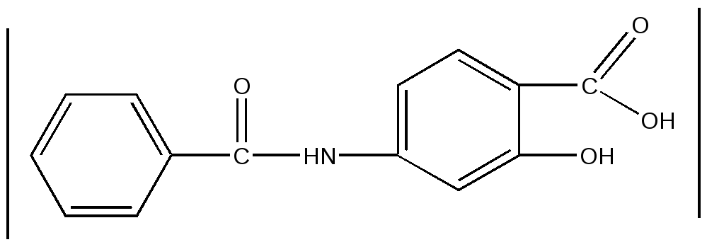
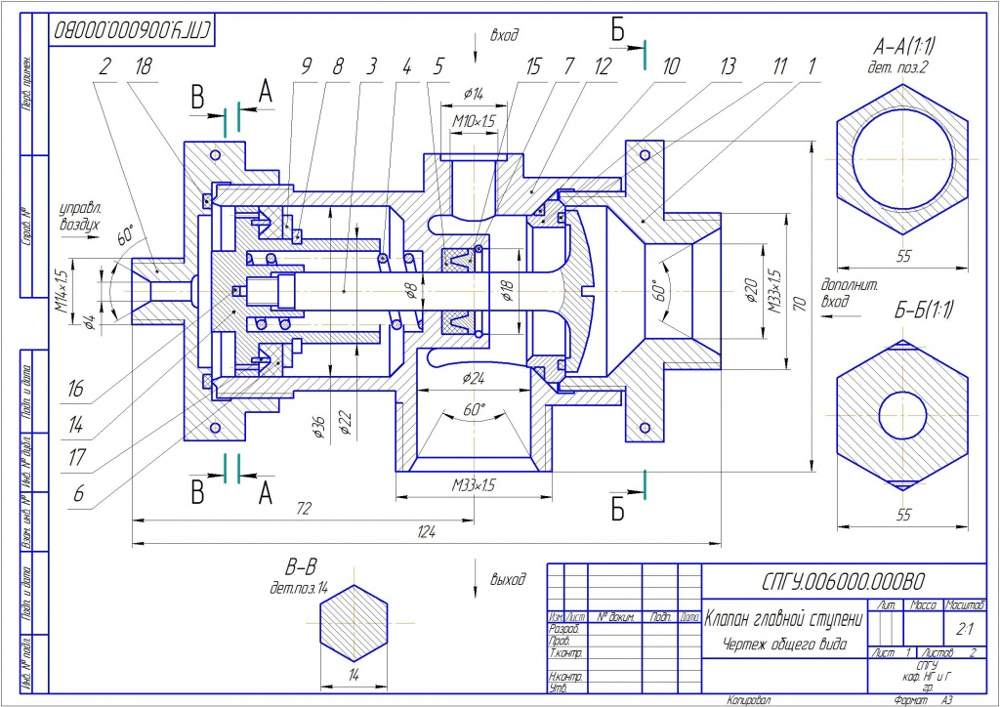
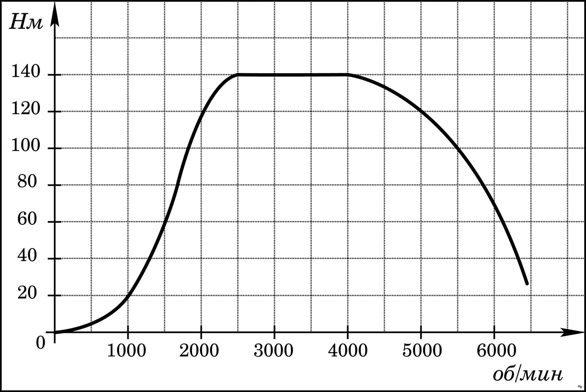
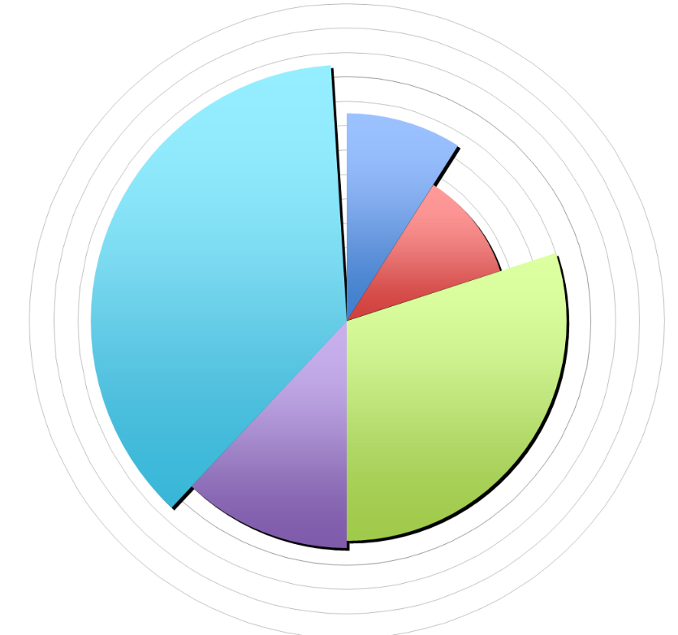

На этом сайте предоставлена обобщающая информация по информатике за 9 класс
Схема - это изображение объекта в главных чертах при помощи условных знаков. Схема отражает внешний вид и структуру предмета. В пример можно привести схему элемента из химии
Чертеж - условное графическое изображение предмета с точным соотношением его размера, получаемое методом моделирования. При построении чертежа используются изображения, числа, текст
График — графическое изображение, дающее наглядное представление зависимости одной величины от другой
Диаграмма - графическое изображение, дающее наглядное представление о соотношении величин или ее значений
Граф — это набор вершин и связей между ними — рёбер. Граф называется неориентированным, если его вершины соединены ребрами, ориентированным, если дугами.
Путь - последовательность ребер или дуг, по которым можно перейти из одной вершину во вторую.
Взвешенный граф — это граф, с каждым ребром которого связано некоторая информация - вес.
Цепь - путь, в который одно ребро не входит более 1 раза, если ее конец и начало совпадают, то это называется циклом, а граф с циклом - сетью.
Дерево - граф без циклов.
1.Постановка задачи - осознание ее условия, при этом должно быть четко определено, что дано и что нужно найти в решаемой задаче
2.Формализация - описательная информационная модель, записываемая с помощью формального языка
3.Алгоритмитизация - постороение четкой инструкции, задающей необходимую последовательность действий для решения задачи
4.Программирование - запись алгоритма на языке программирования
5.Отладка - процесс проверки работоспособности программы и исправление обнаруженных при этом ошибок
6.Выполнение расчётов - проведение по уточненной программе проводятся необходимые вычисления, результаты которых позволяют ответить на поставленные в задаче вопросы
Электронные таблицы - прикладная программа для организации табличных вычислений на компьютере. Наибелее распространены Microsoft Excel и OpenOffice Calc
Строка заголовка содержит название документа и кнопки управления окном
Строка меню содержит названия групп команд управления электронной таблицей
Панели инструментов содержат пиктограммы для вызова наиболее часто используемых команд
Рабочая область - прямоугольное пространство, разделенное на столбцы и строки
Ячейка - наименьшая структурная единица ЭТ
Табличный курсор - прямоугольная рамка, которую можно поместить в любую ячейку
Лист - рабочая область из ячеек
Книга - документ ЭТ из листов, обьединенных в один файл
Содержимым ячейки может быть текст, число и формула
Текст - последовательных любых символов из компьтерного алфавита
Формула - выражение, задающее некоторую последовательнось действий по преобразованию данных. В ЭТ всегда начинается со знака "="
Есть 3 режима работы: формирование, отображение и выполнение вычислений
Формирование - режим редактирования содержимого
Отображение - отображение формул или значений
Выполнение вычислений - режим автоматического вычисления
Канал связи - система технических средств и среда распространения сигналовот источника к приёмнику
Кодирование - преобразование информации в пригодный для передачи по каналу связи вид
Компьютерная сеть - 2 и более компьютеров, соединенных линиями передачи информации
Локальная сеть - обьединенные в определённом месте компьютеры, можут быть одноранговой и с выделенным сервером - наиболее мощный компьютер в сети, к информации на котором получают доступ остальные участники сети - клиенты. Каждый компьютер в сети должен иметь сетевой адапртер
Глобальная сеть - система связанных между собой компьютеров на любом расстоянии, её основой являются каналы связи и узлы - мощный компьютер, постоянно подключенный к сети, к нему подключаются другие компьютеры - абоненты. Организация, предоставляющая такую связь - называется провайдером